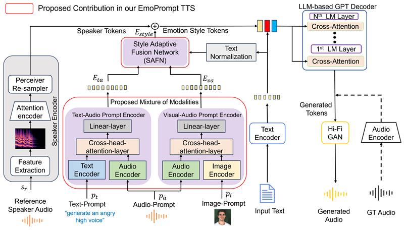
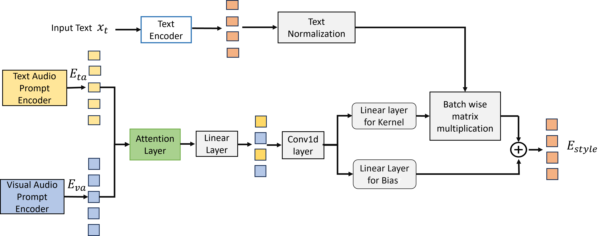

EmoPrompt TTS: Mixture of Cross-Modal Prompts for LLM-based Emotional Voice Synthesis
Model Architecture

Figure 1. Block diagram of the proposed EmoPrompt TTS.

Figure 2. Block diagram of the Style Adaptive Fusion Network.
Demo samples using different audio-based prompts
(A): We have considered reference samples from three different emotions
| Input Text |
Reference Audio |
Multi Modal TTS |
EmoPrompt TTS |
| Proposed EmoReg |
|
|
|